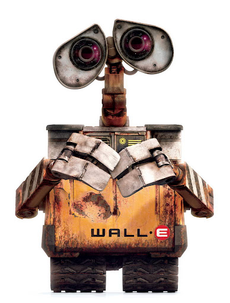
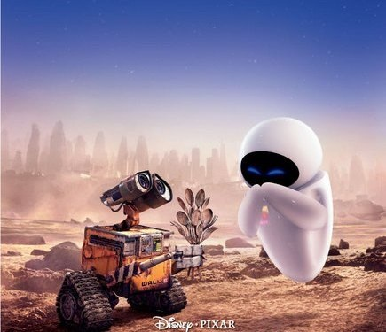

ВАЛЛ-И (2008)
«ВАЛЛ-И» (англ. WALL-E) - полнометражный компьютерный анимационный научно-фантастический фильм 2008 года, созданный Pixar. Режиссёром фильма выступил Эндрю Стэнтон, чей предыдущий фильм «В поисках Немо» получил «Оскара» за лучший анимационный полнометражный фильм. Джим Моррис, ранее работавший в компании Lucasfilm, стал продюсером картины.
Этот мультфильм косвенно затрагивает вопросы будущего человечества. Предположительно в начале XXII века Земля стала окончательно непригодной для жизни людей, переполнившись мусором. Человечество покинуло свою колыбель, отправившись покорять новые планеты. Земля же оказалась населена лишь роботами-мусорщиками. Прошло 700 лет, и целым оказался лишь маленький ВАЛЛ-И. Он сумел воспитать в себе эмоции, а встретив исследовательский робот ЕВА, влюбился в нее.
Еще с середины 90-х сценаристы задумались о реализации подобной идеи. За это время авторы воплотили свой замысел, а помогло им в этом детальное изучение свалок и мусора. Такие познания позволили создать реалистичный мир с отходами.
В титрах после мультфильма показываются картинки, на которых изображено, как люди вместе с роботами восстанавливают Землю и начинают новую жизнь. Стиль самих картинок меняется и показывает развитие живописи, намекая на развитие людей после жизни на корабле, начиная с наскальных рисунков и заканчивая современными видами. Сам звездолёт начинает зарастать зеленью. Ответ на вопрос, где находятся и почему не вернулись остальные «Аксиомы», так и остался открытым.
В финале ВАЛЛ-И и ЕВА стоят у дерева, выросшего из росточка в ботинке.
После окончания титров логотипу студии Pixar, белой настольной лампе, ВАЛЛ-И меняет перегоревшую лампочку накаливания на энергосберегающую, и, роняя на обратном пути букву R, становится на её место.
СМОТРЕТЬ ТРЕЙЛЕР СМОТРЕТЬ МУЛЬТФИЛЬМ